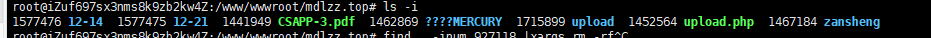
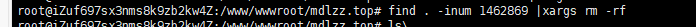

楔子
在很久很久之前，一个很傻很傻的刘萌新不知何因上传了一个带特殊字符文件名的文件到服务器中，于是他想着怎么删除。
方法1、从面板中删除，然而面板和萌新一样垃圾，在文件管理中根本不显示这个文件
方法2、xshell连接，rm -rf一梭子下去 ，但是文件名你不能输入，并且同目录下有其他重要的东西。
然后你会想通过 | grep 啦正则啦 一梭子来找到那个文件，没错本萌新就是这样的 ε=ε=ε=┏(゜ロ゜;)┛。但是还是找不到

直到你发现了一个叫inode的东西
1、inode简介
理解inode，要从文件储存说起。
文件储存在硬盘上，硬盘的最小存储单位叫做”扇区”（Sector）。每个扇区储存512字节（相当于0.5KB）。
操作系统读取硬盘的时候，不会一个个扇区地读取，这样效率太低，而是一次性连续读取多个扇区，即一次性读取一个”块”（block）。这种由多个扇区组成的”块”，是文件存取的最小单位。”块”的大小，最常见的是4KB，即连续八个 sector组成一个 block。
文件数据都储存在”块”中，那么很显然，我们还必须找到一个地方储存文件的元信息，比如文件的创建者、文件的创建日期、文件的大小等等。这种储存文件元信息的区域就叫做inode，中文译名为”索引节点”。
2、inode的内容
inode包含文件的元信息，具体来说有以下内容：
* 文件的字节数
* 文件拥有者的User ID
* 文件的Group ID
* 文件的读、写、执行权限
* 文件的时间戳，共有三个：ctime指inode上一次变动的时间，mtime指文件内容上一次变动的时间，atime指文件上一次打开的时间。
* 链接数，即有多少文件名指向这个inode
* 文件数据block的位置
可以用stat命令，查看某个文件的inode信息：
[root@localhost /]# stat example.txt 3、inode号码
每个inode都有一个号码，操作系统用inode号码来识别不同的文件。
这里值得重复一遍，Unix/Linux系统内部不使用文件名，而使用inode号码来识别文件。对于系统来说，文件名只是inode号码便于识别的别称或者绰号。表面上，用户通过文件名，打开文件。实际上，系统内部这个过程分成三步：首先，系统找到这个文件名对应的inode号码；其次，通过inode号码，获取inode信息；最后，根据inode信息，找到文件数据所在的block，读出数据。
使用ls -i命令，可以看到文件名对应的inode号码：
[root@localhost /]# ls -i test.txt
6970 test.txt 4、硬链接
一般情况下，文件名和inode号码是”一一对应”关系，每个inode号码对应一个文件名。但是，Unix/Linux系统，允许多个文件名指向同一个inode号码。这意味着，可以用不同的文件名访问同样的内容；对文件内容进行修改，会影响到所有文件名；但是，删除一个文件名，不影响另一个文件名的访问。这种情况就被称为”硬链接”（hard link）。
5、软链接
除了硬链接以外，还有一种特殊情况。文件A和文件B的inode号码虽然不一样，但是文件A的内容是文件B的路径。读取文件A时，系统会自动将访问者导向文件B。因此，无论打开哪一个文件，最终读取的都是文件B。这时，文件A就称为文件B的”软链接”（soft link）或者”符号链接（symbolic link）。
这意味着，文件A依赖于文件B而存在，如果删除了文件B，打开文件A就会报错：”No such file or directory”。这是软链接与硬链接最大的不同：文件A指向文件B的文件名，而不是文件B的inode号码，文件B的inode”链接数”不会因此发生变化。
ln -s命令可以创建软链接。
当我们知道有inode号码这么个东西后，那么刘萌新的问题就能迎刃而解了

